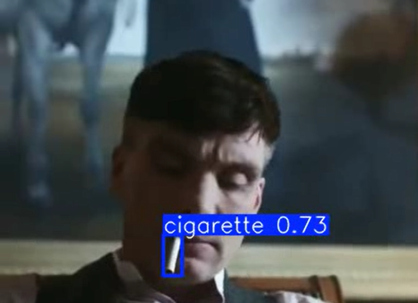
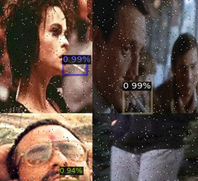
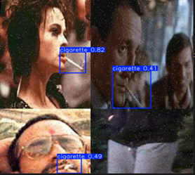
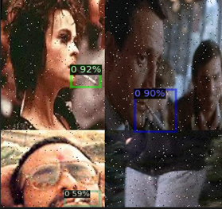
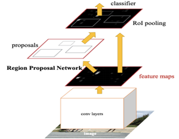
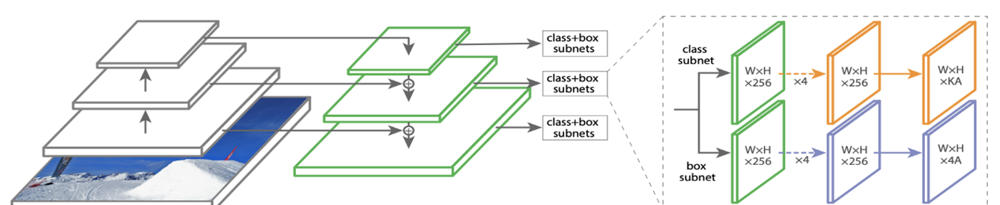
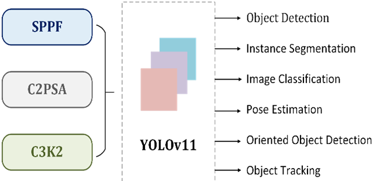

Two-stage still wins on accuracy
Faster R-CNN leads on AP, AP75 and every size bucket. On small objects the margin is 3.1 AP over RetinaNet — the proposal step earns its keep.
Comparative study · October 2025
Faster R-CNN, RetinaNet and YOLO11, trained on the same merged 11,056-image dataset. The question is not only which model is most accurate, but what that accuracy costs in training time — and on small objects the gap is wider than the headline AP suggests.
“A Comparative Analysis of Convolutional Neural Networks for Cigarette Small Object Detection” Umut Alperen Cengiz · unpublished manuscript

Average precision on the 1,370-image validation split. Higher is better; APsmall isolates objects under 32² pixels, which is where a cigarette usually lives.
| Model | AP | AP50 | AP75 | APs | APm | APl | Train |
|---|---|---|---|---|---|---|---|
| Faster R-CNNR50-FPN · 2-stage | 43.64 | 87.25 | 38.95 | 27.41 | 45.07 | 51.75 | 10–12 h |
| RetinaNetR50-FPN · 1-stage | 41.76 | 84.67 | 35.70 | 24.30 | 43.36 | 51.23 | 8–10 h |
| YOLO11nano · 1-stage | 40.40 | 88.50 | 35.20 | — | — | — | 3–4 h |
Values reproduced verbatim from the manuscript. Ultralytics does not report size-bucketed AP, hence the dashes. Training times are wall-clock on one RTX 3060 (6 GB).
The shipped checkpoint is the YOLO11n model from the study, exported to ONNX. Upload an image, analyze a clip, or point a camera at a screen — the network runs in this tab, so no frame is uploaded and no server is involved.
Inference uses ONNX Runtime Web (10 MB model, downloaded once). Faster R-CNN and RetinaNet are not bundled: their checkpoints are 322 MB and 296 MB and were trained for CUDA. Their predictions from the paper are in the gallery below.
Lower confidence finds more candidates; raise it when a scene is cluttered or low-contrast.
No image loaded yet.
Frames stay in this tab and are never uploaded.
The same four frames through each detector, thresholded at different operating points. Note how the two-stage model stacks boxes while YOLO11 keeps one confident box.



Three public Roboflow sets were merged into a single cigarette class.
Duplicates and false annotations were removed before training.
The test split was used for qualitative checks only, never for model selection.
Everything ran on one RTX 3060 with 6 GB of VRAM and 16 GB of DDR4 — which is why the Detectron2 batch size is 4 with two gradient-accumulation steps.



Faster R-CNN leads on AP, AP75 and every size bucket. On small objects the margin is 3.1 AP over RetinaNet — the proposal step earns its keep.
3–4 hours against 10–12, and the best AP50 of the three. But it trails by 3 AP overall, which is the price of a single pass and a nano backbone.
RetinaNet's headline trick targets class imbalance. With a single cigarette class it still helps hard positives, but the advantage over YOLO11 shrinks.